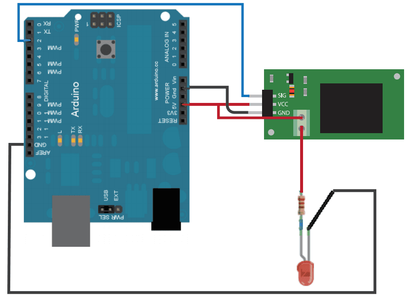

This demo will show you how to use Relay. Actually, Relay is an electronic switch that can be controled by an IO.
Relay is mainly used for weak power control strong power. For example, use your Arduino to control a lamp, you need a Realy. Here we'll use relay to control a LED.
Hardware Required：
Circuit：
Connect Relay to D2 of Arduino.

Code:
Open Arduino IDE, click File -> Sketchbook -> relay_led.
Upload the code, you can find the led blink.
Reference
Copyright (c) 2008-2016 Seeed Development Limited (www.seeedstudio.com / www.seeed.cc)